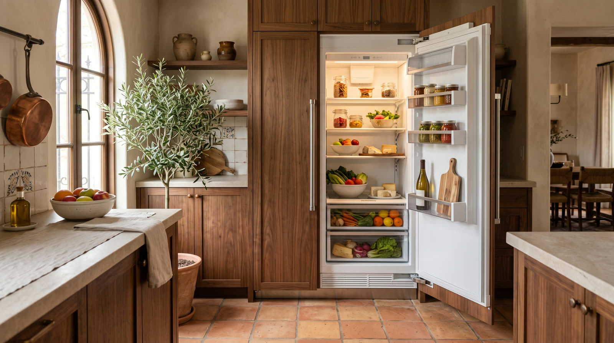

Thermador refrigeration
The least dramatic service we offer, and the one that saves clients the most money over a decade.

Refrigeration breathes through its condenser, and the condenser filters the whole kitchen through itself all day, every day. Dust, lint, and pet hair accumulate into insulation exactly where the machine needs to shed heat. Efficiency slides first, then run times stretch, and eventually the compressor spends its life making up for a dirty coil.
Our cleaning is the full procedure, not a vacuum wave. Grilles and access panels off, coil cleaned front and back, fan blades cleaned and spun up under test, temperatures and run behavior verified after reassembly. Done yearly, it is the cheapest life insurance a built in refrigerator can buy.
Air carries the kitchen into the coil, and the coil keeps a little of it forever. Households with pets or open lofts load the coil twice as fast.
Rising electric use, marathon run cycles, weak cooling in heat waves, and compressor failures that arrive years earlier than they should have.
Factory airflow, shorter cycles, quieter operation, and headroom for the brutal weeks of summer when the machine needs every degree of rejection it can get.
Once a year for most homes. Twice for shedding pets or heavy cooking households. We can put it on a schedule so nobody has to remember.
The grille, sure. The coil face, the deep side, and the fan need panels removed and proper tools, and bent fins from enthusiastic brushing are a repair of their own. Let us take it.
It is the centerpiece of the plan, joined by gasket checks, temperature verification, and a cooking side inspection in the same visit.
One phone call and the problem becomes ours. Open daily, 7am to 7pm.
First callers get first pick of the same day windows. The $89 diagnostic credits toward the repair, so the answer itself ends up costing nothing.